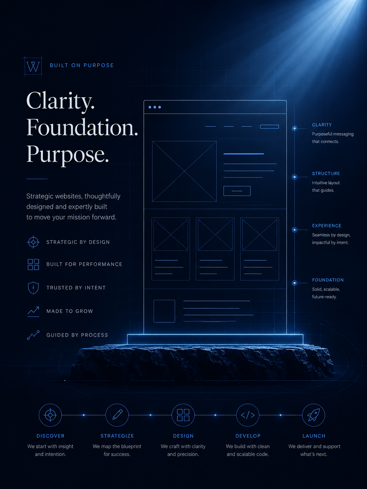

Web Design
Custom websites built around clarity, trust, and a strong first impression.
Built with clarity, purpose, and trust for businesses ready to be seen.
Get in touch
The Standard Behind the Build
Every business has a message. My job is to shape that message into a website that feels clear, honest, and easy to act on.
The process starts with the foundation: what you offer, who you serve, and what your customer needs to understand before they reach out.
From there, every section is built with purpose — clear words, clean structure, mobile-friendly layouts, and contact paths that guide people toward the next step without confusion.
Built with clarity. Guided by trust. Designed to bear fruit.
Services
Custom websites built around clarity, trust, and a strong first impression.
Ongoing updates, fixes, and monthly support to keep your website current.
Basic on-page structure to help your website become easier to understand and find.
Practical protection basics that help keep your website safer and more dependable.
PROCESS
A good website does not come from guessing. It comes from understanding the business, planning the structure, designing with purpose, building with clean structure, and testing before it goes live. This process keeps your project organized, clear, and focused on helping your business look professional and earn trust.
Ready to build a website with a clear plan behind it?
Let’s create something clean, professional, and built to help your business look credible and easier to contact.
We start by learning about your business, your services, your audience, and what the website needs to accomplish.
We define the pages, features, timeline, content needs, and conversion goals so the project has a clear direction.
We organize the structure of the website and plan how visitors move from landing on the site to contacting you.
We create a layout blueprint focused on clarity, usability, and making the website easy to navigate.
We design the look and feel with clean spacing, strong visuals, brand consistency, and a professional presentation.
We build the website with responsive layouts, clean structure, performance in mind, and attention to detail.
We test the website, check links and forms, prepare it for launch, and give you clear next steps after it goes live.